Senior Content Designer
I work in financial services, where clarity isn't a nice-to-have — it's the product. I question structure before touching copy, advocate upstream, and build content frameworks that hold up long after I've moved on to the next problem.
Current role
Leading content strategy for AI chatbot experiences. One NLP deep-linking feature alone has projected savings of $8M in call deflection between F25–F30.
About
I'm a senior content designer with 10+ years in UX writing and content design, most of it in financial services — TD Bank, RBC, and Canada Life. I have an MA in English, and I came up through editorial work before moving into UX — which means I'm fast at spotting when structure is doing the job copy is being asked to do instead.
My strength is upstream thinking. I get more value from questioning why something exists than from polishing how it's worded. That instinct has shaped how I approach chatbot content systems, IA, voice frameworks, and anything where the wrong structure will outlast the right words.
I'm also genuinely, almost unreasonably curious about most things — history, animals, carpentry, the correct use of parentheses (very important). That curiosity is not incidental to the work. Observing and understanding people is the job. I happen to find it fascinating.
Conversational UI · Content Strategy
I was asked to swap out a few words in TD's Clari chatbot. Instead of treating it as a find-and-replace, I made the case to improve the experience end-to-end.
Conversational UI · Content Strategy
Four transaction types. Four different cancellation flows. Written at different times, by different people, with no consistent approach. I used a platform migration as the forcing function to fix it properly.
Content Strategy · IA
Advisors were regularly choosing the wrong signing option because the guidance was buried in a tooltip. When a rebrand update was scoped, I saw an opening to fix the actual problem.
Content Strategy · Enterprise
Multiple teams owned different versions of essentially the same screen. Nobody loved it — they just hadn't had someone volunteer to fix it. I did.
My first question when I look at any content is "why?" — why does this exist, why is it structured this way, is it actually serving the user? That question usually surfaces more value than any rewrite would.
I build content frameworks, patterns, and standards that other people can use. If my solution only works for the first use case, it's not a solution — it's a workaround.
I've made the case for API integrations, user research, merged flows, and scope additions — not because it made my job easier, but because it was clearly the right thing for the user.
Error states, limitation states, edge cases — these are where trust is made or broken. I treat them with the same rigour as the happy path, because users absolutely notice when you don't.
I work closely with product, design, engineering, research, legal, and compliance. In regulated industries, that range isn't optional — and I've learned how to keep user needs visible in every conversation.
I don't claim impact — I name it. Reduced call escalation by 33%. Projected $8M in call deflection savings. The writing should do the same: concrete, not vague; useful, not impressive-sounding.
Open to senior content design and content strategy roles, particularly in complex product domains — financial services, AI, or anywhere the stakes of getting content wrong are genuinely high.
TD Bank · Conversational UI · Content Strategy
I was asked to update copy in TD's Clari chatbot as part of a platform migration. Instead of treating it as a find-and-replace, I advocated to improve the experience end-to-end. The original direct deposit flow sent users outside the chat to find their account details or download a prefilled form. The final version pulls account data directly into the conversation via API, and gets users where they need to go in a single tap.
I started, as always, by questioning every piece of content in the existing flow — what was there, why it was there, and whether it was actually serving the user. The direct deposit flow required users to leave the chat entirely, find their account details or form in another part of the app. For a chatbot with millions of active users, that's a lot of unnecessary friction.
There were also two separate intent responses covering essentially the same task — which meant users got a different experience depending on how they happened to phrase their question. That inconsistency wasn't intentional. It was just never questioned.
Two separate, navigation-heavy responses. Six steps to get to a form that could have been a single link. Users were in a chat interface being told to go use a different part of the app — which defeats the purpose of a chat interface.
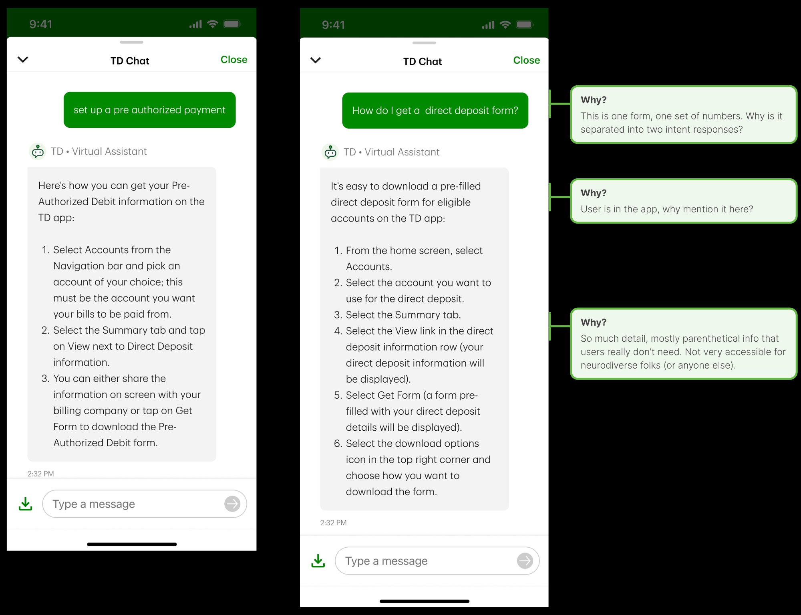
The existing experience — two intent responses, both navigation-heavy. My "Why?" annotations show where I started questioning the structure before touching the copy.
The team didn't have scope to add new APIs at first, so I combined the two overlapping intent responses and significantly cut the copy. Three steps instead of six. Bold formatting on the key words users need to scan for. A clearer, more direct opening that told users what they could do, not how the system worked.
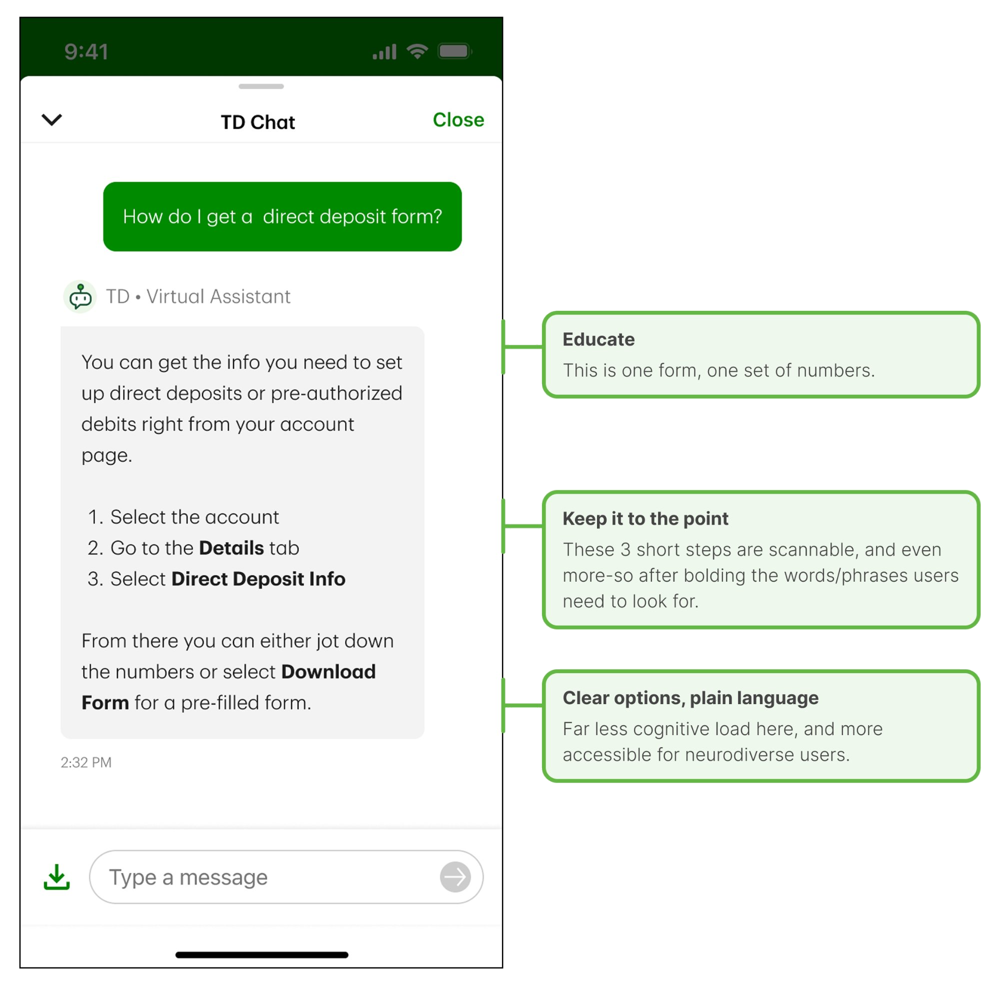
First update — one response, scannable steps, annotated content decisions. Far less cognitive load than the original, and more accessible for neurodiverse users.
After the first update launched, I worked with the team to get an API built that could pull account information directly into the conversation. Instead of asking users to find their own account details, the chat now surfaces them. Users with a single eligible account see a streamlined, frictionless experience. Users with multiple accounts are prompted to choose — with their actual account names, not generic categories.
Final iteration — account data surfaced directly in chat via API. Deep links replace navigation instructions. Blurred for confidentiality.
Instead of telling users where to go, the chat now brings the information to them. Each iteration built on the last, and the final experience is meaningfully better than where we started — not because the scope demanded it, but because we asked "why?" at every step.
TD Bank · Conversational UI · Content Strategy
TD Bank's American chatbot handled cancellation queries across checks, bill payments, Zelle® transactions, and internal transfers. Each had its own response — written at different times, by different people, with no shared approach.
The problems were consistent across all of them. Responses front-loaded caveats and system logic instead of answering the user's question. They gave step-by-step navigation instructions — "from the top navigation, select Transfers, then Scheduled Transfers, then select the trash icon" — when a direct link to the right screen would do the job in one tap.
The second problem was consistency. Without a shared approach, the chatbot felt unreliable. A user who cancelled a bill payment one week and a scheduled transfer the next got a completely different experience — with no good reason for it.
I started by questioning every piece of content in each response — what was there, why it was there, and whether it was actually serving the user.
Navigation instructions were the wrong solution. Users were in a chatbot because they wanted help. Telling them to navigate to a different part of the app and find the right icon was just offloading the task back to them. Where the app supported deep links, I used them. Where it didn't, I replaced wordy multi-step instructions with a single named destination.
I also reworked the clarifying question. The original asked what kind of "payment" the user wanted to cancel — but the options didn't map to how users think about their transactions. I made it more direct, more accurately referenced 'transactions' rather than payments, and refined the selection choices to better reflect the user's mental model.
Each transaction type had its own problems. Here's what changed across all four flows, plus the clarifying question that kicks them off.
Clarifying question
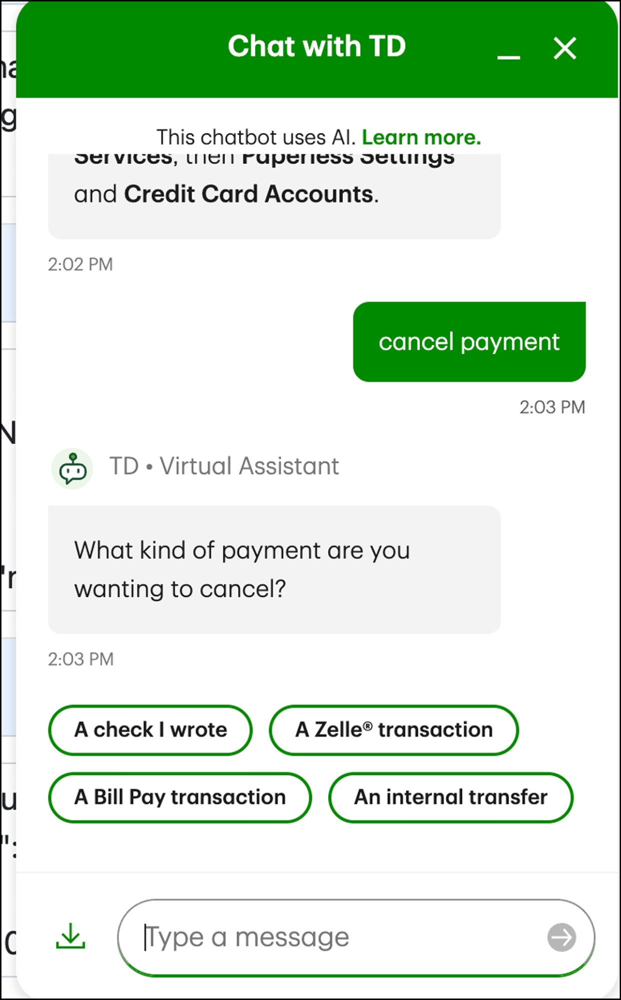
"What kind of payment are you wanting to cancel?" — awkward phrasing, wrong terminology, options don't reflect how users think about their accounts.
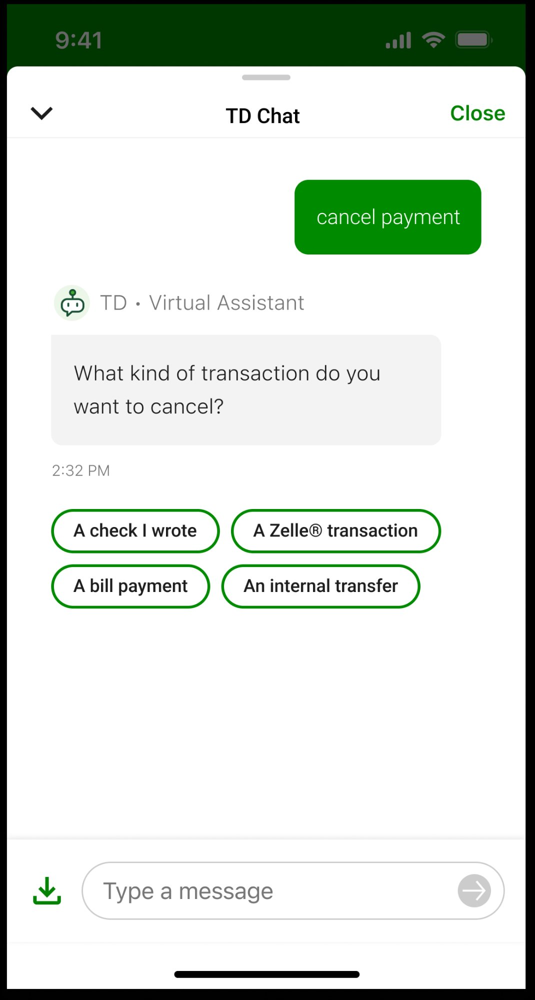
"What kind of transaction do you want to cancel?" — cleaner phrasing, correct terminology, options aligned to the user's mental model.
Check
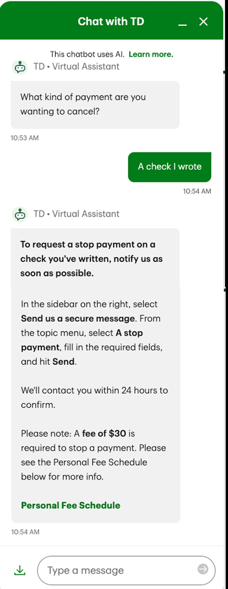
Multi-step navigation instructions, $30 fee buried at the bottom, users left to find a topic menu themselves.
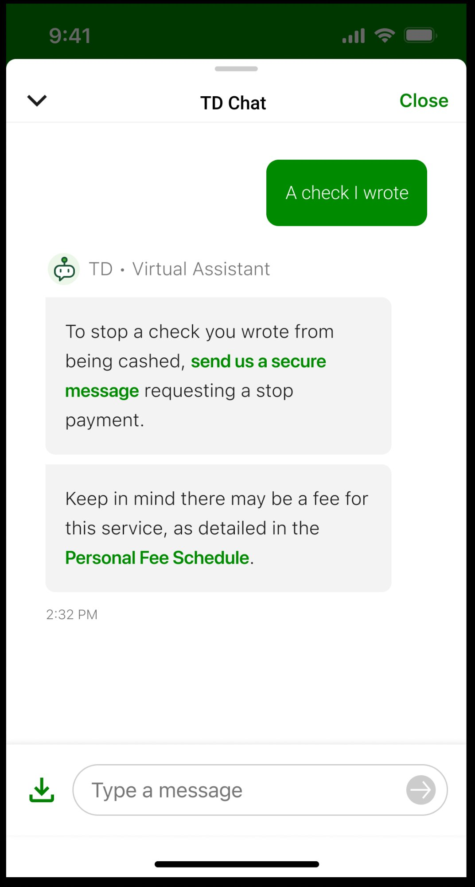
One deep link to send a secure message. Fee disclosed upfront in a second bubble — honest, not buried.
Zelle®
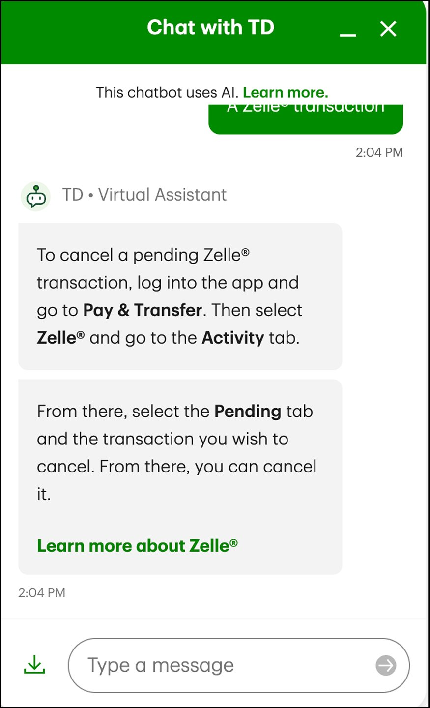
Split across two bubbles, five navigation steps, users left to find the pending transaction themselves.
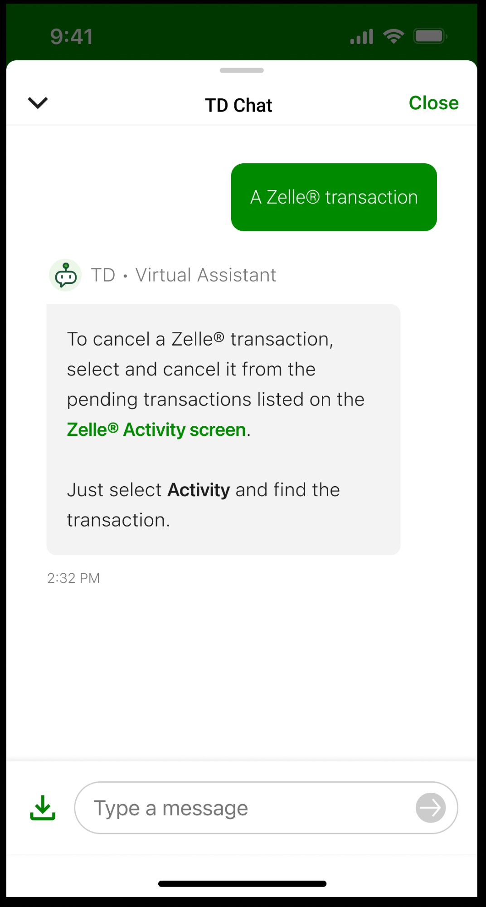
One deep link to the Zelle® Activity screen. One follow-up sentence to orient the user. Done.
Bill Pay
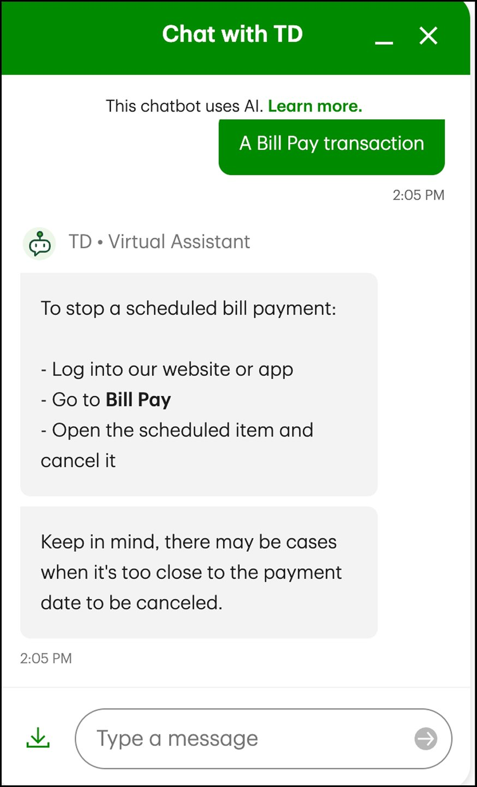
Three navigation steps, no deep link, timing caveat delivered rather formally.
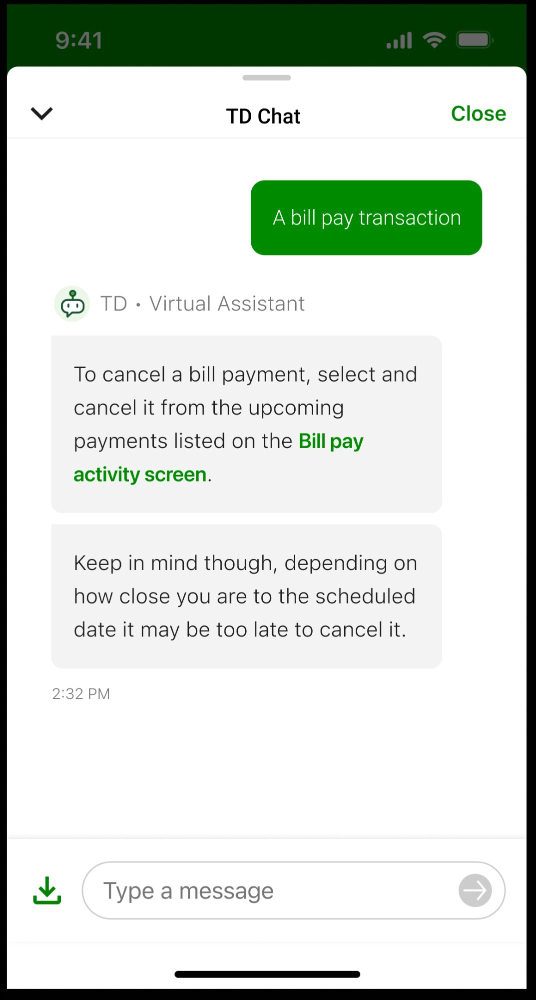
Deep link to Bill pay activity screen. Timing caveat kept — reworded to feel like a heads-up, not a disclaimer.
Internal Transfer
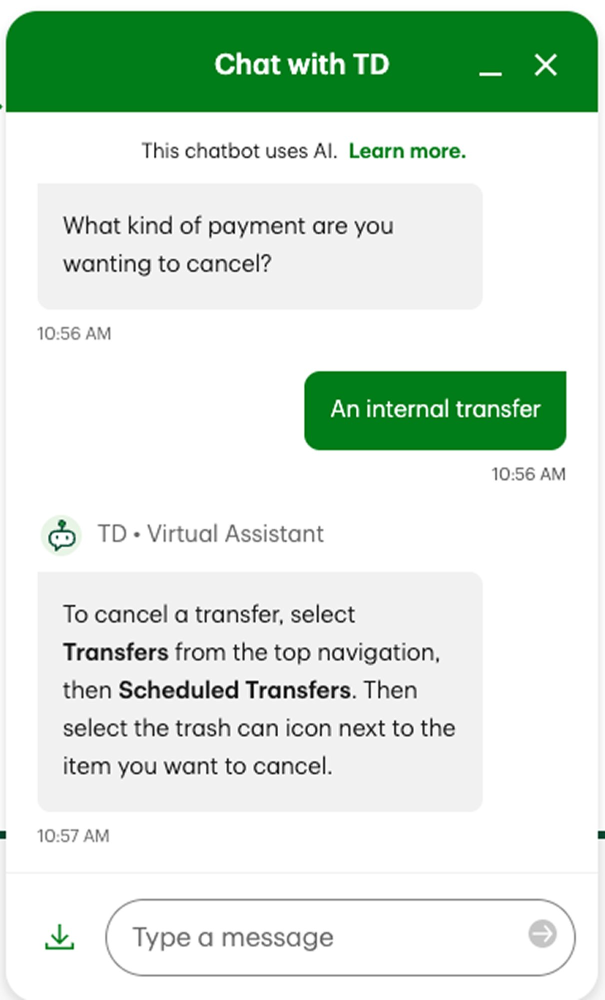
"Select Transfers from the top navigation, then Scheduled Transfers. Then select the trash can icon..." — the task offloaded entirely back to the user.
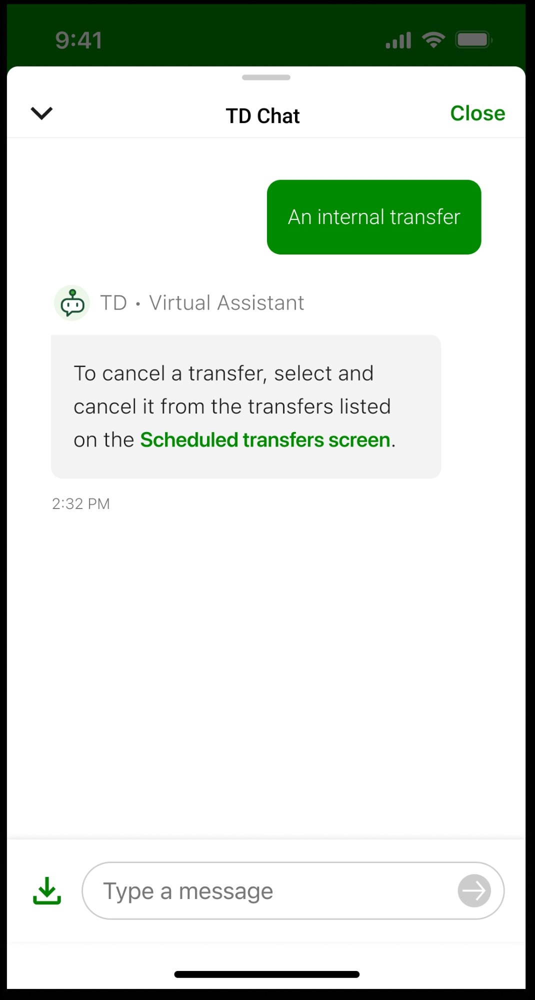
One sentence. One deep link to the Scheduled transfers screen. Trust the app UI.
Users can now get to the right place in fewer steps, with a clearer understanding of what they're cancelling and what will happen next. This work is part of TD USA's deep linking NLP feature — a broader initiative projected to save $8M in call deflection between F25–F30 by increasing containment, reducing steps, and boosting task completion across the chatbot.
Canada Life · Content Strategy · IA
When advisors start a SimpleProtect application, they need to choose whose device the contract will be signed on. From both an experience and legal perspective, signing on the client's device is the preferred option — but the original screen didn't make that clear at all.
The guidance about which option to choose was buried in a hover tooltip. Call centre staff reported that advisors were regularly choosing "sign on advisor's device" because they didn't see the ramifications of that choice until it was too late — more steps, more friction, worse outcome for the client.
When a rebranding update was scoped for this page, I saw the opening I needed.
I started by mapping every scenario a user might face depending on which signing option they chose. Before touching a word of copy, I collected all the variables into a table to get a clear picture of the actual complexity.
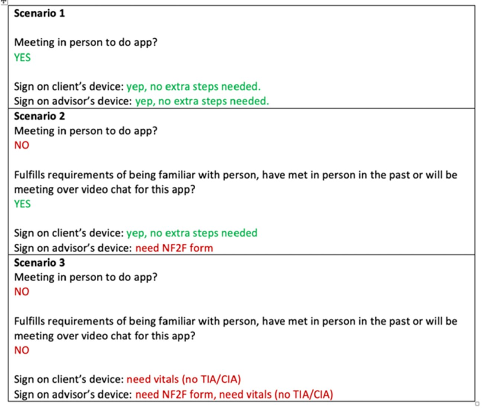
Mapping all the signing scenarios and their consequences before touching the UI.
Once I had that, I moved it into a flowchart to make it easier to share with the team and align on the problem. This is the kind of artifact that helps get stakeholders on the same page — it's a lot harder to argue against a decision when the complexity is laid out plainly in front of everyone.
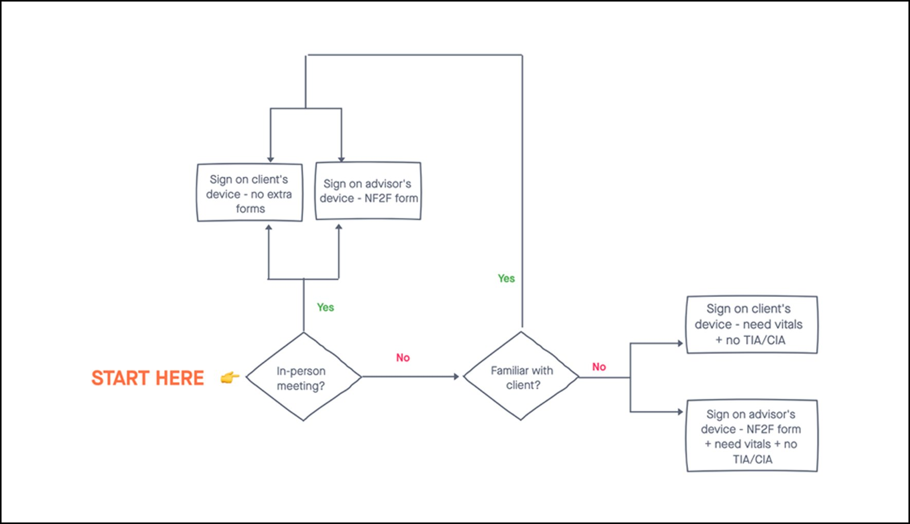
The simplified flowchart I used to align the team — a cleaner model for a genuinely complex decision.
While working through the flows, I noticed that two of the questions about client familiarity had been treated as separate paths. I worked with an underwriter to dig into the backend procedures and found there was no meaningful difference between them. I made the case to merge them.
The final version replaced the static, ambiguous screen with a dynamic experience. As advisors answer questions, the UI updates in real time to show exactly what steps are coming — making it immediately obvious that signing on the client's device is the simpler path before they commit.
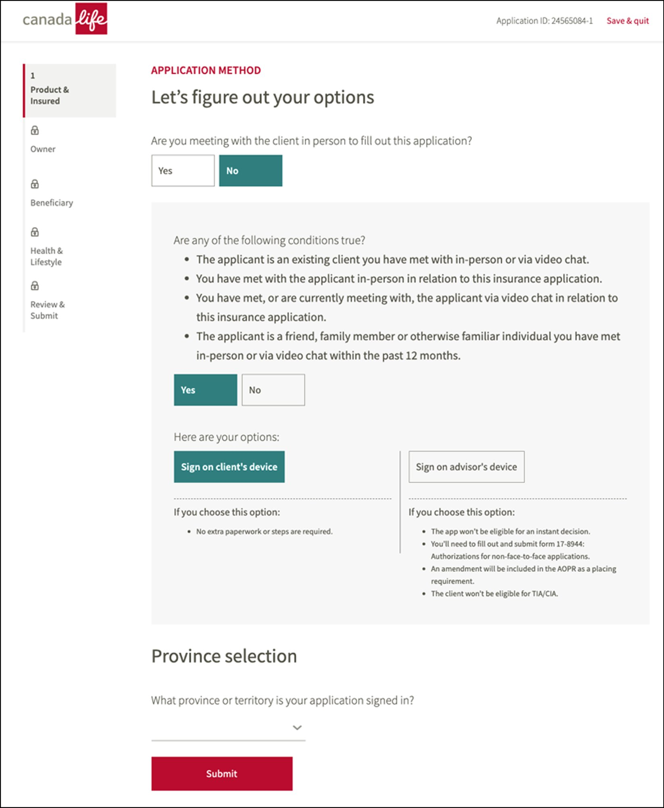
The final screen — consequences of each choice visible upfront, not hidden in a tooltip.
RBC · Content Strategy · Enterprise alignment
RBC had multiple versions of essentially the same screen — the upcoming transactions view — depending on what type of transaction was involved. Different siloed design teams owned different flows, which meant a disconnected experience for users and no single source of truth for designers.
This wasn't a funded project. Nobody had been asked to fix it. But the experience misalignment was something that universally annoyed users and colleagues, and I noted that nobody had volunteered to address it.
I reached out to various product owners and designers, suggesting we align. Turns out the experience misalignment was something that universally annoyed people — they were just happy to have someone volunteering to take it on.
I framed the new component as reflecting the experience of paying for someone in person. Instead of abstract data fields, I described it as: pulling out a wallet [from], pulling out cash [amount], handing it over [to]. That framing helped stakeholders understand the updated field order immediately.
I described pulling out your wallet to pay someone, and how that conversation could go:
Stakeholders understood the updated field order and overview component immediately — from, amount, to — because it mapped to something they already knew.
Once we aligned on the field ordering and the new component, I worked through the template with developers and QA, and documented the new single source of truth in RBC's design system in Confluence.
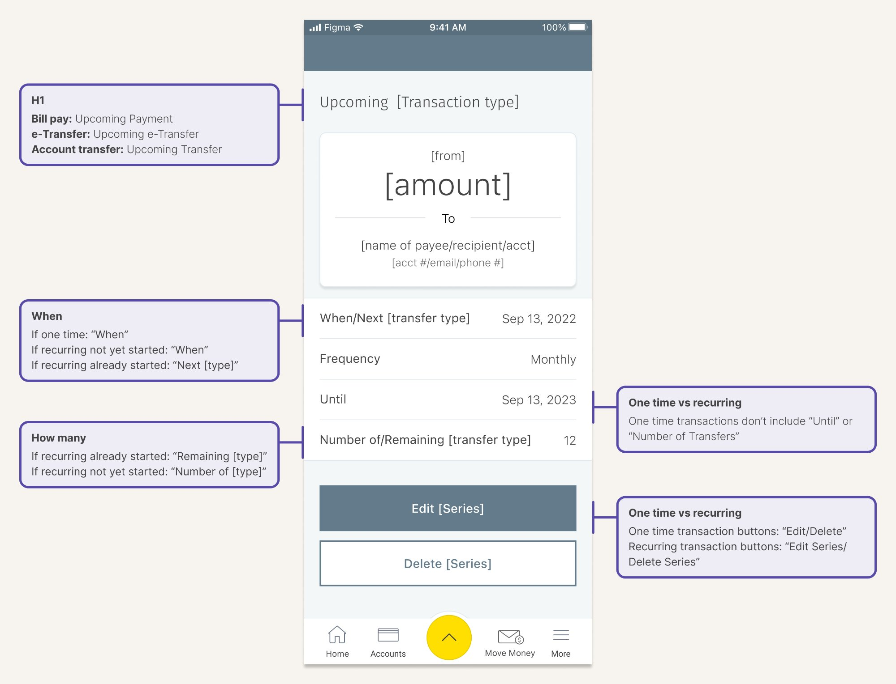
The content template — one dynamic model covering all transaction types, with annotations showing how each field adapts.
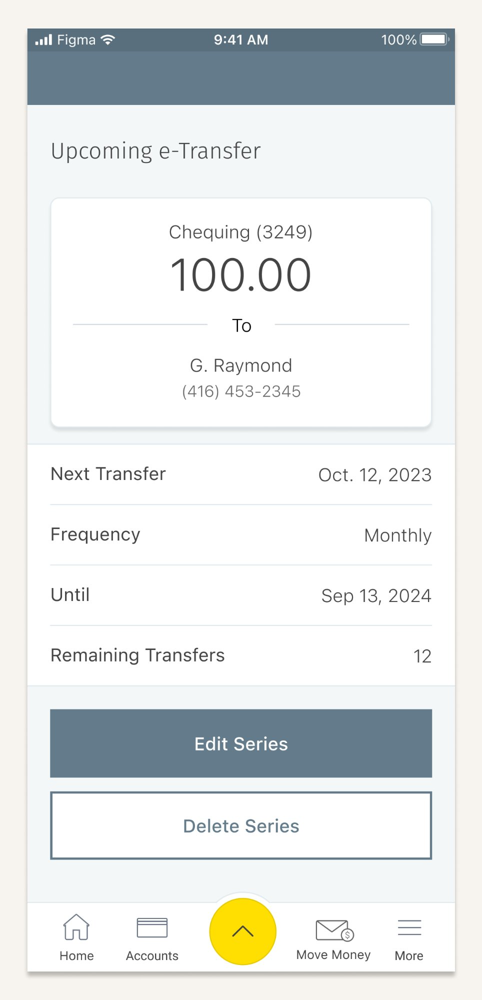
The final screen — a single consistent experience for all transaction types, with mock data.